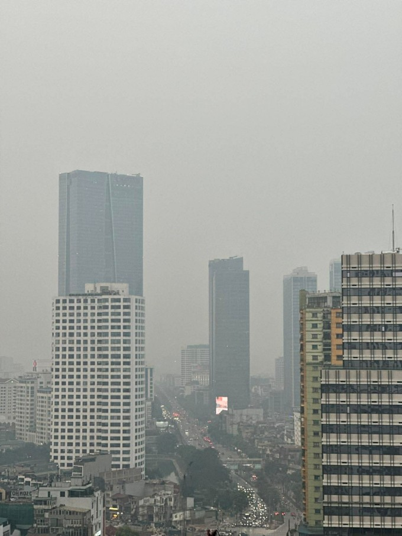

Mỹ – Iran đạt thỏa thuận về ngừng bắn, mở cửa eo biển Hormuz trong hai tuần
Mỹ và Iran đồng ý ngừng bắn trong hai tuần, Tehran sẽ cho phép tàu thuyền đi qua eo biển Hormuz trong thời gian này "với sự điều phối từ lực lượng vũ trăng".
Tối 6/4, chất lượng không khí tại Hà Nội tiếp tục suy giảm, nhiều điểm quan trắc ghi nhận chỉ số mức xấu, có thể ảnh hưởng sức khỏe người.
Lúc 19h, trạm quan trắc tại cổng trường Đại học Bách Khoa trên đường Giải Phóng ghi nhận chỉ số AQI ở mức 168; trạm công viên Khuất Duy Tiến 167 và trạm 556 Nguyễn Văn Cừ 159. Đây đều là ngưỡng xấu, có thể gây tác động tới sức khỏe người bình thường, trong khi nhóm nhạy cảm đối mặt nguy cơ nghiêm trọng hơn.
Chất lượng không khí bắt đầu xấu đi từ trưa và tăng dần về chiều. Ngoài Hà Nội, một số điểm quan trắc tại Thái Nguyên và Hưng Yên cũng ghi nhận mức ô nhiễm tương tự

Theo hệ thống theo dõi của IQAir, Hà Nội hiện đứng đầu danh sách các thành phố ô nhiễm nhất thế giới với chỉ số tổng thể 196, cao hơn Kuwait City (Kuwait) và Shanghai (Trung Quốc) cùng ở mức 155. Nhiều điểm nội đô ghi nhận mức rất xấu, như khu vực Hồ Tây 251, Võ Chí Công 222, Hàng Trống 224.
Cơ quan khí tượng nhận định điều kiện thời tiết ngày 6/4 không thuận lợi cho việc khuếch tán chất ô nhiễm. Nhiệt độ cao nhất phổ biến 33-35 độ C, có nơi trên 35 độ, trong khi ban đêm không mưa khiến không khí thiếu cơ chế rửa trôi bụi mịn.
Gió nam đến đông nam hoạt động yếu, cấp 2-3, làm giảm khả năng phát tán các chất ô nhiễm từ giao thông và xây dựng. Nền nhiệt ban đêm duy trì ở mức 26-28 độ C, khiến chênh lệch nhiệt độ ngày đêm nhỏ, hạn chế đối lưu khí quyển. Những yếu tố này khiến bụi mịn và khí độc dễ tích tụ gần mặt đất.
Cuối năm ngoái, khi chất lượng không khí ở Hà Nội nhiều ngày ở mức xấu, Bộ Nông nghiệp và Môi trường đã yêu cầu các bộ, ngành triển khai biện pháp cấp bách tại Hà Nội và vùng lân cận. Bộ Công Thương được đề nghị kiểm soát chặt khí thải tại các nhà máy nhiệt điện, thép, hóa chất, phân bón; giảm công suất khi chỉ số ô nhiễm vượt ngưỡng 200.
Bộ Xây dựng yêu cầu các công trình tăng cường che chắn, rửa xe, phun sương dập bụi, thậm chí tạm dừng những hạng mục phát sinh bụi lớn. Các địa phương cần phân luồng giao thông, kiểm soát phương tiện chở vật liệu nhằm hạn chế ùn tắc.
Lực lượng công an được giao tăng cường xử lý xe chở vật liệu không che chắn, phương tiện quá niên hạn xả khói đen và hành vi đốt rác trái phép. Bộ Y tế hướng dẫn người dân bảo vệ sức khỏe, đặc biệt với nhóm nhạy cảm, trong khi Bộ Giáo dục và Đào tạo yêu cầu các cơ sở giáo dục hạn chế hoạt động ngoài trời khi không khí ở mức xấu.

Mỹ và Iran đồng ý ngừng bắn trong hai tuần, Tehran sẽ cho phép tàu thuyền đi qua eo biển Hormuz trong thời gian này "với sự điều phối từ lực lượng vũ trăng".

Người dân Iran tập trung trên đường phố Tehran, vậy có và hô khẩu hiệu sau khi lệnh ngừng bắn hai tuần với Mỹ được công bố.

Nằm ở bộ nam eo biển Hormuz, cách Iran gần 34 km, bán đảo Musandam của Oman đang chứng kiến những hệ lụy về kinh tế và đời sống khi xung đột bùng phát.